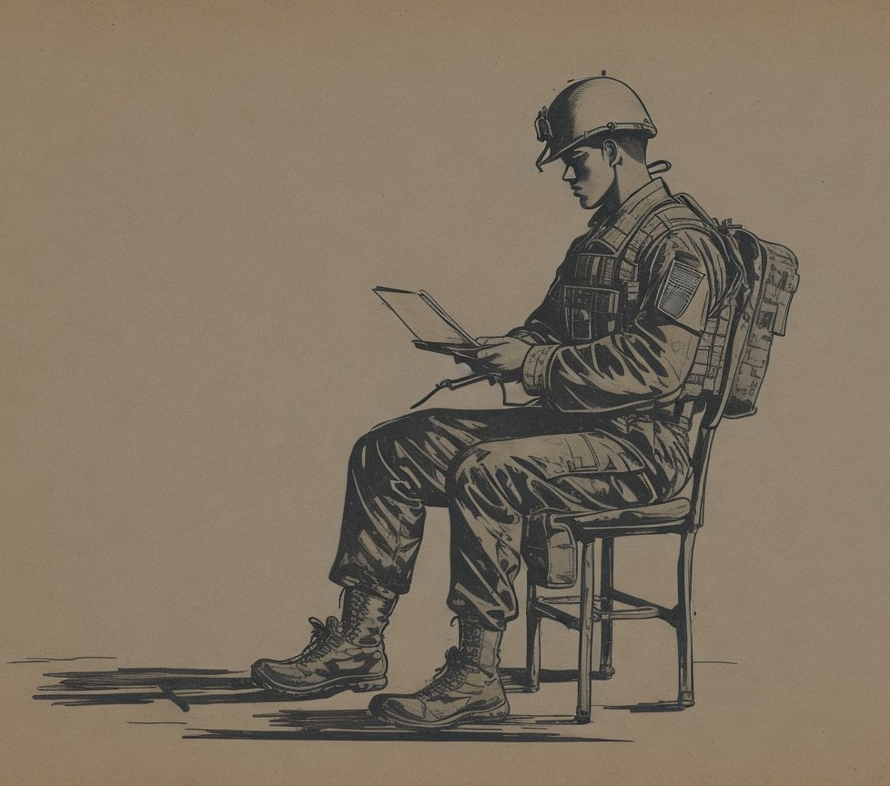

*Para mais detalhes sobre o tempo em cada experiência, baixe o meu currículo.
Com uma paixão precoce pela informática, mergulhei no mundo dos sistemas e hardware desde os meus 15 anos, quando a tecnologia ainda era um território pouco explorado. Comecei minha trajetória profissional no Exército, aos 18 anos, onde adquiri uma base sólida em tecnologia e segurança da informação.
Posteriormente, ingressei em uma secretaria de trânsito, onde fui responsável por uma variedade de tarefas, desde o preenchimento de planilhas até a confecção de documentos no Word, além de fornecer suporte técnico para todos os computadores e impressoras da instituição. Lá eu adquiri uma boa experiência no pacote Microsoft Office.
Minha jornada profissional também incluiu uma passagem por uma empresa de crédito, onde desempenhei o papel crucial de analisar perfis de clientes e garantir a segurança dos dados, além de ter aprimorado meu conhecimento em intranet e infraestrutura. Aprendi muito sobre estruturação de redes, compliance e relacionamento com clientes.
Como especialista em segurança residencial, assumi a responsabilidade de projetar e implementar infraestruturas para sistemas de vigilância, assegurando que as imagens de segurança chegassem de forma eficiente à central de monitoramento. Desenvolvi bastante meu conhecimento em infraestrutura.
Fui líder de jovens, adolescentes e louvor em uma igreja, onde descobri minha paixão por liderar, ensinar e trabalhar em equipe.
Além disso, me tornei CEO de uma pequena empresa de internet, onde adquiri minha parte com mão de obra devido à falta de recursos financeiros na época. Trabalhei arduamente por mais de 3 anos, construindo uma infraestrutura de redes e comunicação robusta, fornecendo internet para mais de 100 clientes e estabelecendo links ponto a ponto de longas distâncias. Essa experiência não apenas me proporcionou habilidades técnicas sólidas, mas também me permitiu desenvolver competências em vendas e compreensão do mercado por meio da interação com os clientes.
Atualmente estou cursando Ciência da Computação - Bacharelado, o que tem ampliado meu conhecimento teórico e prático na área. Paralelamente, estou dedicando meu tempo ao estudo de programação, atualmente conquistei e continuo conquistando certificados em Front-end - JavaScript, HTML 5 e CSS, além de estudar linguagem Python. Estou visando aprimorar minhas habilidades e acompanhar as demandas do mercado de tecnologia.
Essas experiências moldaram minha trajetória profissional e me proporcionaram uma sólida base de habilidades em tecnologia da informação, segurança de dados, gestão de infraestrutura, programação front-end e outras dentro da área. Estou entusiasmado em continuar minha jornada profissional e acadêmica, buscando oportunidades para aplicar meu conhecimento e contribuir para o avanço da tecnologia e da sociedade.